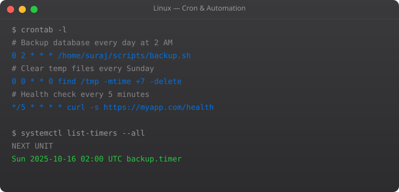

Disk management is a critical Linux skill -- "disk full" is one of the most common causes of production outages. Whether you need to add storage to a running server, find what is consuming disk space, or set up a new volume on AWS EC2, these commands and concepts are essential for anyone managing Linux systems.
# df -- disk filesystem usage
df -h # Human readable (GB, MB)
df -h / # Root filesystem only
df -T # Show filesystem type
df -i # Show inode usage (not just space)
# du -- disk usage of directories and files
du -sh /var/log # Total size of /var/log
du -sh * # Size of each item in current dir
du -sh /* 2>/dev/null # Size of each top-level directory
# Find the largest directories
du -h /var | sort -rh | head -20
# Find large files
find / -type f -size +100M 2>/dev/null
find /var/log -type f -size +50M
# ncdu -- interactive disk usage navigator
sudo apt install ncdu
ncdu /varlsblk # Show block devices (disks and partitions)
lsblk -f # Show filesystems and UUIDs
# Example output:
# NAME MAJ:MIN RM SIZE RO TYPE MOUNTPOINT
# sda 8:0 0 20G 0 disk
# sda1 8:1 0 20G 0 part /
# sdb 8:16 0 100G 0 disk (unformatted additional disk)
sudo fdisk -l # Detailed partition info
blkid # Block device UUIDs and filesystems
# On AWS EC2:
# Root volume: /dev/xvda
# Additional EBS: /dev/xvdb, /dev/xvdc, etc.# After attaching new EBS volume in AWS console:
# 1. Check it appears
lsblk # See /dev/xvdb with no MOUNTPOINT
# 2. Format with ext4 filesystem
sudo mkfs.ext4 /dev/xvdb
# 3. Create mount point
sudo mkdir -p /data
# 4. Mount temporarily
sudo mount /dev/xvdb /data
# 5. Make it permanent (survive reboot)
# Get the UUID
blkid /dev/xvdb
# UUID=abc123...
# Add to /etc/fstab
echo "UUID=abc123 /data ext4 defaults 0 2" | sudo tee -a /etc/fstab
# Test fstab before rebooting
sudo mount -a
# Verify
df -h /datacat /etc/fstab
# Format: device mountpoint fstype options dump pass
# UUID=abc123 /data ext4 defaults 0 2
# UUID=def456 /var/log ext4 defaults 0 2
# /dev/xvda1 / ext4 defaults 0 1
# Options:
# defaults: rw, suid, dev, exec, auto, nouser, async
# noexec: cannot execute binaries from this mount
# ro: read only
# noatime: do not update access time (performance)
# Pass field: 0=skip, 1=check first (root), 2=check afterfree -h # Show memory and swap usage
swapon --show # Show active swap devices
# Create a 2GB swap file
sudo fallocate -l 2G /swapfile
sudo chmod 600 /swapfile
sudo mkswap /swapfile
sudo swapon /swapfile
# Make permanent
echo "/swapfile none swap sw 0 0" | sudo tee -a /etc/fstab
# Check swappiness (0-100, lower = less aggressive)
cat /proc/sys/vm/swappiness
sudo sysctl vm.swappiness=10Either disk space is full (df -h shows 100% use) or inodes are exhausted (df -i shows 100% inode use). For space: find and delete large files, compress logs, clean package cache (apt clean). For inodes: find directories with many small files (du --inodes).
In AWS console, modify the EBS volume size. Then in Linux: sudo growpart /dev/xvda 1 extends the partition. sudo resize2fs /dev/xvda1 extends the filesystem (for ext4). No reboot needed. lsblk and df -h verify the new size.
Every file and directory has an inode storing metadata (permissions, owner, timestamps, pointers to data blocks). Each filesystem has a fixed number of inodes. If you create millions of tiny files, you can exhaust inodes even with disk space remaining. df -i shows inode usage.
ext4 is the standard for most Linux servers -- stable, well-supported, good performance. xfs is better for very large files and high-throughput workloads. btrfs supports snapshots and copy-on-write. For cloud (EBS, GCS), ext4 or xfs are the standard choices.
sudo umount /data -- Linux will refuse if anything is still using the mount. If umount fails: fuser -m /data shows which processes are using it. lsof /data shows open files. Kill those processes or move out of the directory, then unmount.
In Part 12, we cover Linux system hardening -- securing your servers against common attacks and vulnerabilities.
← Back to Blog# LVM lets you resize volumes without downtime
# PV (Physical Volume) -> VG (Volume Group) -> LV (Logical Volume)
# Set up LVM on a new disk
sudo pvcreate /dev/xvdb # Create physical volume
sudo vgcreate data-vg /dev/xvdb # Create volume group
sudo lvcreate -L 50G -n data-lv data-vg # Create logical volume
# Format and mount
sudo mkfs.ext4 /dev/data-vg/data-lv
sudo mount /dev/data-vg/data-lv /data
# Extend logical volume (can be done while mounted)
sudo lvextend -L +20G /dev/data-vg/data-lv
sudo resize2fs /dev/data-vg/data-lv # Extend filesystem
# List LVM information
sudo pvs # Physical volumes
sudo vgs # Volume groups
sudo lvs # Logical volumessudo apt install fio
# Test sequential write speed
fio --name=seqwrite --rw=write --bs=128k --size=1G --numjobs=4 --runtime=60 --filename=/tmp/testfile
# Test random read (typical for databases)
fio --name=randread --rw=randread --bs=4k --size=1G --numjobs=4 --runtime=60 --filename=/tmp/testfile --iodepth=64
# Simple throughput test
dd if=/dev/zero of=/tmp/test bs=1M count=1024 oflag=direct
# Watch real-time disk I/O
iostat -xz 2 # Every 2 seconds